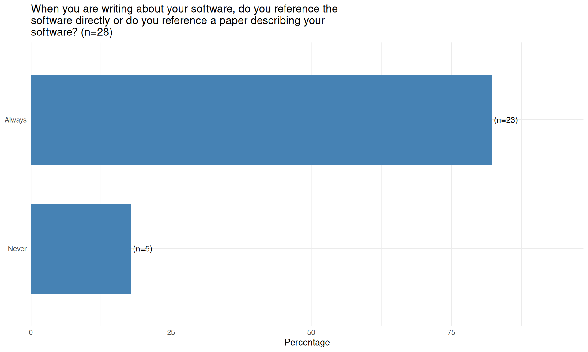
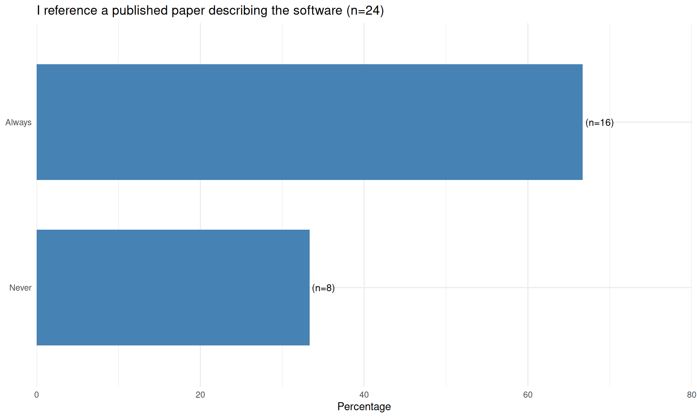
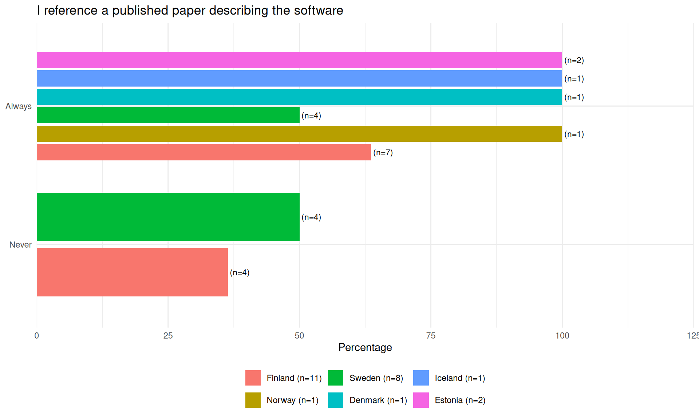
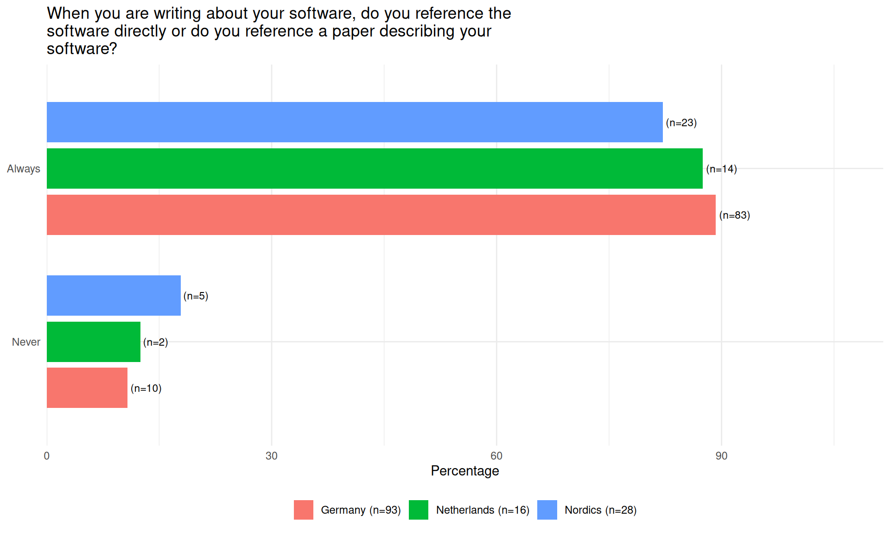

32 Referencing software in writing
32.1 Nordics
32.1.1 When you are writing about your software, do you reference the software directly or do you reference a paper describing your software?
| When you are writing about your software, do you reference the software directly or do you reference a paper describing your software? | ||
| Total respondents: 28 | ||
| Response | Respondents (n) | Percentage (%) |
|---|---|---|
| Never | 5 | 17.9% |
| Always | 23 | 82.1% |

32.1.2 I reference a published paper describing the software
| I reference a published paper describing the software | ||
| Total respondents: 24 | ||
| Response | Respondents (n) | Percentage (%) |
|---|---|---|
| Never | 8 | 33.3% |
| Always | 16 | 66.7% |

32.1.3 Statistics by age group
32.1.3.1 When you are writing about your software, do you reference the software directly or do you reference a paper describing your software?
| When you are writing about your software, do you reference the software directly or do you reference a paper describing your software? | ||
| Total respondents: 28. Percentages are within each age group. | ||
| Response | Respondents (n) | Percentage (%) |
|---|---|---|
| 45+ (n=6) | ||
| Never | 2 | 33.3% |
| Always | 4 | 66.7% |
| 35-45 (n=13) | ||
| Always | 13 | 100.0% |
| Below 35 (n=9) | ||
| Never | 3 | 33.3% |
| Always | 6 | 66.7% |
32.1.3.2 I reference a published paper describing the software
| I reference a published paper describing the software | ||
| Total respondents: 24. Percentages are within each age group. | ||
| Response | Respondents (n) | Percentage (%) |
|---|---|---|
| 45+ (n=7) | ||
| Never | 3 | 42.9% |
| Always | 4 | 57.1% |
| 35-45 (n=8) | ||
| Never | 2 | 25.0% |
| Always | 6 | 75.0% |
| Below 35 (n=9) | ||
| Never | 3 | 33.3% |
| Always | 6 | 66.7% |
32.2 Within Nordics
32.2.1 When you are writing about your software, do you reference the software directly or do you reference a paper describing your software?
| When you are writing about your software, do you reference the software directly or do you reference a paper describing your software? | ||
| Total respondents: 28. Percentages are within each country. | ||
| Response | Respondents (n) | Percentage (%) |
|---|---|---|
| Estonia (n=1) | ||
| Never | 1 | 100.0% |
| Iceland (n=1) | ||
| Always | 1 | 100.0% |
| Denmark (n=3) | ||
| Always | 3 | 100.0% |
| Sweden (n=8) | ||
| Never | 2 | 25.0% |
| Always | 6 | 75.0% |
| Norway (n=3) | ||
| Always | 3 | 100.0% |
| Finland (n=12) | ||
| Never | 2 | 16.7% |
| Always | 10 | 83.3% |

32.2.2 I reference a published paper describing the software
| I reference a published paper describing the software | ||
| Total respondents: 24. Percentages are within each country. | ||
| Response | Respondents (n) | Percentage (%) |
|---|---|---|
| Estonia (n=2) | ||
| Always | 2 | 100.0% |
| Iceland (n=1) | ||
| Always | 1 | 100.0% |
| Denmark (n=1) | ||
| Always | 1 | 100.0% |
| Sweden (n=8) | ||
| Never | 4 | 50.0% |
| Always | 4 | 50.0% |
| Norway (n=1) | ||
| Always | 1 | 100.0% |
| Finland (n=11) | ||
| Never | 4 | 36.4% |
| Always | 7 | 63.6% |

32.3 Between Countries
32.3.1 When you are writing about your software, do you reference the software directly or do you reference a paper describing your software?
| When you are writing about your software, do you reference the software directly or do you reference a paper describing your software? | ||
| Total respondents: 137. Percentages are within each country group. | ||
| Response | Respondents (n) | Percentage (%) |
|---|---|---|
| Nordics (n=28) | ||
| Never | 5 | 17.9% |
| Always | 23 | 82.1% |
| Netherlands (n=16) | ||
| Never | 2 | 12.5% |
| Always | 14 | 87.5% |
| Germany (n=93) | ||
| Never | 10 | 10.8% |
| Always | 83 | 89.2% |

32.3.2 I reference a published paper describing the software
| I reference a published paper describing the software | ||
| Total respondents: 126. Percentages are within each country group. | ||
| Response | Respondents (n) | Percentage (%) |
|---|---|---|
| Nordics (n=24) | ||
| Never | 8 | 33.3% |
| Always | 16 | 66.7% |
| Netherlands (n=14) | ||
| Never | 8 | 57.1% |
| Always | 6 | 42.9% |
| Germany (n=88) | ||
| Never | 22 | 25.0% |
| Always | 66 | 75.0% |